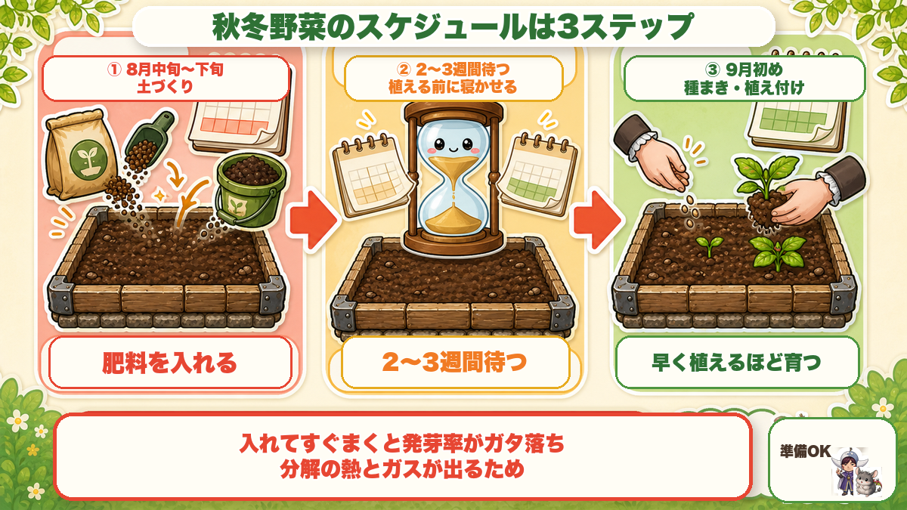
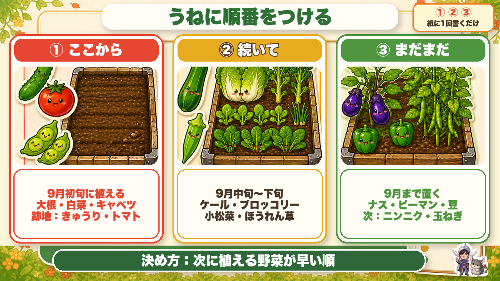
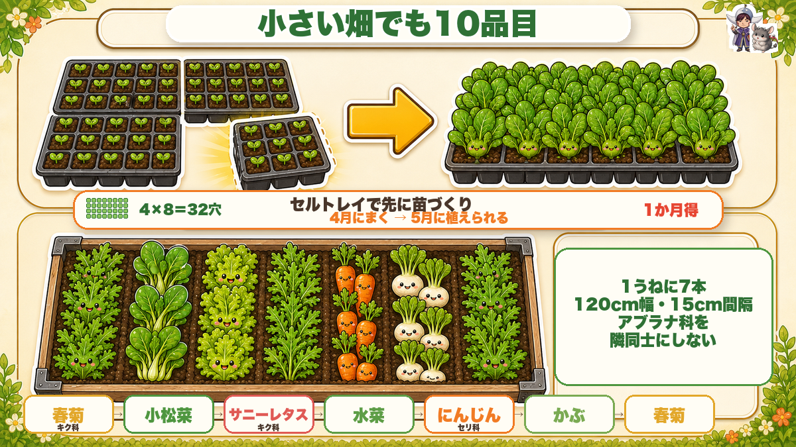
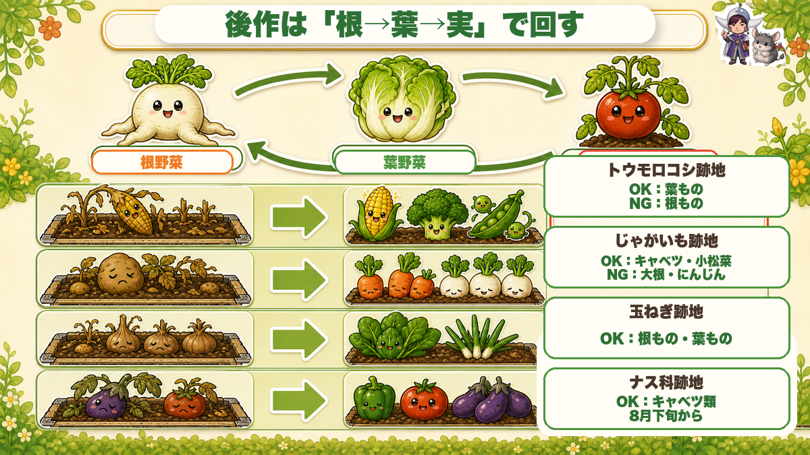

【保存版】秋冬野菜の作付けプラン🍂 うねに順番をつけるだけで、秋がラクになる

🗨️「どのうねに何を植えたらいいのか、毎年ノリで決めてる」
🗨️「畑が狭いから、そんなに種類は作れない」
🗨️「連作障害が怖くて、結局いつも同じ配置になる」
どうも、8150（えいこう）です🌱 家庭菜園歴8年、理科の教員免許を持っていて、有機・無農薬で野菜を育てています。
前回は「夏野菜の店じまい」で、抜く順番と土のリセットの話をしました。今回はその続き、何をどこに植えるかを1枚の紙にまとめる話です。
先に、いちばん大事なことを言っておきますね。
作付けプランって「何を植えるか」の話じゃなくて、「どのうねから手をつけるか」の話なんです。
ここが決まっていないと、行き当たりばったりになってしまい、『どうしよう！間に合わない😢』となってしまいます。
この記事では、紙1枚でできるプランの立て方と、小さい畑でも10品目つくる方法をお話しします。
※以下の時期は中間地（関東〜関西の平野部）が目安。寒い地域は少し遅らせ、暖かい地域は早めに。
まずスケジュールの骨格を頭に入れる

秋冬野菜のスケジュールは、じつはたった3ステップです。
- ①8月中旬〜下旬：土づくり（肥料を入れる）
- ②2〜3週間あける：ここが大事
- ③9月初め：種まき・植え付け
なぜ2〜3週間あけるのかというと、有機肥料を入れた直後にまくと、分解のときに出る熱とガスで発芽率がガタ落ちするからです。くわしくは前回の記事で書きました。
そして、秋冬野菜は早く植えて初期の生育を良くするのが勝負。だから逆算すると、8月中旬には土づくりを終えていたいんですね。
トウモロコシ・じゃがいも・玉ねぎ・枝豆の跡地がもう空いている人は、そこからすぐ準備に入れます。ラッキーです。
うねに「順番」をつける

ここが今日の本題です。
うねが何本かある場合、どのうねから片づけるかで秋が決まります。決め方はシンプルで、次に植える野菜が早い順です。
前回もお話しした「ここから・続いて・まだまだ」の3分割ですね。
①「ここから」＝9月初旬に植えるうね
大根・白菜・キャベツ・茎ブロッコリー・カリフラワー・ロマネスコ・芽キャベツ。このあたりは早く植えないと大きくなりません。
だから、このうねの跡地（きゅうり・トマト・枝豆など）から先に片づける。
②「続いて」＝9月中旬〜下旬のうね
ケール・ブロッコリー・小松菜・ほうれん草。ブロッコリーは多少遅れても花蕾（からい／食べるつぼみの部分）は大きくなりますし、おくてのほうれん草なら10月でもいけます。
③「まだまだ」＝9月まで置いておくうね
ナス・ピーマン・豆は、まだ収穫が続きます。ここは10〜11月に植えるニンニク・玉ねぎ・そら豆・スナップエンドウのために取っておきます。
紙に書く、それだけ
これ、たった1回紙に書くだけです。
うねの絵を描いて、「①ここから」「②続いて」「③まだまだ」と書き込む。それで「今日はどこをやるんだっけ」が消えます。
猛暑の中で「よし全部やるぞ」とやると、まず体が持ちません。去年の8月、私は休みの日に一気にやろうとして、3時間で頭がぼーっとしてきて中断しました。しかもその後1週間、畑に行く気が起きなかったんです😇
小さい畑でも10品目つくる、2つの方法

「うちは畑が狭いから、そんなに種類は作れない」という方へ。作れます。
方法①：セルトレイで育苗して「1か月稼ぐ」
これ、知ってから作れる回数が明らかに増えました。
ふつうは「畑が空いてから種をまく」ですよね。でもそれだと、畑が空くまでの時間が丸ごと無駄になります。
そこで、畑が空く1か月前に、セルトレイで苗を作っておく。
具体的に逆算するとこうです。
- 大根の収穫が4月下旬
- 土づくりをして畑が使えるのが5月中旬
- だから4月中旬にタネをまいておく
- 5月中旬には「タネ」じゃなく「苗」を植えられる ＝ 1か月分の時間を稼げる
使うのは128穴のセルトレイを1/4にカットしたもの（4×8で32穴）。家庭菜園でそんなにたくさん苗は要りません。これくらいがちょうどいいです。
ひとつコツがあって、育苗は自宅でやってください。畑だと毎日は見に行けませんが、自宅なら「水が切れた」「弱ってきた」のサインにすぐ気づけます。
方法②：1つのうねに、筋まきで何種類も
もうひとつ。1本のうねに何種類も植える方法です。
支柱を土に押し付けて、15cm間隔で筋（まき溝）を引きます。120cmのうねなら、7本の筋が引けます。
この1本ずつに違う野菜をまく。1本の筋の半分ずつで分けてもOK。これだけで7種類です。
筋まきのいいところは、整然と並ぶので管理がしやすいこと。どこに何をまいたか分からなくなりません。
★ここで大事な注意点がひとつ。
アブラナ科ばかり並べないでください。アブラナ科（小松菜・水菜・かぶ・チンゲンサイ）は虫が大好きなので、集めると虫の食堂ができあがります。
そこで、キク科（春菊・レタス）やセリ科（にんじん）を間に挟む。この2つは虫があまり寄りません。
たとえばこんな並びです。
春菊（キク科）→ 小松菜 → サニーレタス（キク科）→ 水菜 → にんじん（セリ科）→ かぶ → 春菊
アブラナ科が隣り合わないだけで、被害がぐっと減ります。虫対策そのものは無農薬の虫対策大全にまとめてあります。
後作の相性は「根→葉→実」で覚える

「連作障害が怖い」という方へ。覚えるのは1つの原則だけで大丈夫です。
根野菜 → 葉野菜 → 実野菜 の順にぐるぐる回す。
- 根野菜…大根・にんじん・かぶ・じゃがいも・玉ねぎ
- 葉野菜…白菜・キャベツ・小松菜・ほうれん草・レタス・ブロッコリー
- 実野菜…トマト・きゅうり・なす・ピーマン・ししとう
この順で回していけば、だいたい大きな失敗はしません。
跡地別のおすすめ（これだけ覚えれば十分）
・トウモロコシの跡地 → ◯レタス・白菜・ほうれん草・ブロッコリー
⚠️ にんじん・大根はNG。トウモロコシはネコブセンチュウを増やす性質があって、そのあとに根菜を植えると根がボコボコになります。これ、知らない人が多いです。
・じゃがいもの跡地 → ◯キャベツ・小松菜・ブロッコリー
じゃがいもは肥料をけっこう残すので、それを吸ってくれる葉物がぴったり。逆に大根・にんじんは同じ根野菜なのでやめておきます。
・玉ねぎの跡地 → ◯ほうれん草・大根・キャベツ
・ナス科（トマト・なす・ピーマン）の跡地 → ◯キャベツ・ブロッコリー
キャベツは暑さに強くて、8月下旬から植え付けを始められます。ナス科の収穫が終わるタイミングとぴったり合うんですよね。11月には収穫できます。
・白菜の跡地（11月後半） → ◯ほうれん草（要防寒）・にんじん（1月まき・要防寒）
春からならネギ・そら豆（2月下旬〜3月の苗）・ナス科もいけます。ほうれん草を植えるときは、石灰を1平方メートルあたり100g入れてください。
学ぶ：なぜ「同じ科」を続けるとダメなのか🔬
理科の時間です。ここが分かると、後作の表を丸暗記しなくてよくなります。
連作障害の正体は、大きく2つです。
①土の養分が偏る
野菜によって、よく吸う成分が違います。同じ野菜ばかりだと、特定の成分だけがどんどん減って、別の成分は余ったまま。バランスが崩れます。
②その野菜を狙う菌や虫だけが増える
こっちが本命です。
トマトが好きな菌にとって、トマトが毎年同じ場所にあるのは「エサが毎年同じ席に届く」状態。当然、その菌だけが増え続けます。
だから「同じ科を続けない」んですね。科が違えば、狙う虫も菌も違うからです。
面白いのが、ネコブセンチュウ。トウモロコシの跡地に根菜がNGなのは、トウモロコシがこのセンチュウを増やすから。センチュウは根に卵を産みつけてコブを作るので、根そのものを食べる大根やにんじんは直撃を受けます。葉物なら、根がコブだらけでも上の葉は食べられるので、被害が目立ちません。
「何を食べる部分にするか」で、被害の見え方が変わる——これ、けっこう面白い話だと思いませんか。
お子さんと一緒なら、抜いた株の根を並べて見比べてみてください。ボコボコの根を見つけたら、それがセンチュウの仕業です。「この場所には大根を植えないでおこう」と一緒に決めると、それだけで立派な観察と計画になります☺️
まとめ
ここまで読んでくださって、ありがとうございます！
作付けプランって難しそうに聞こえますが、やることは紙1枚です。
- うねに「①ここから・②続いて・③まだまだ」と順番をつける。次に植える野菜が早い順
- スケジュールは8月中旬に土づくり → 2〜3週間あける → 9月初めに植える
- セルトレイで先に育苗しておくと1か月稼げる（128穴を1/4にカット・育苗は自宅で）
- 1うねに15cm間隔で7本の筋。アブラナ科の間にキク科・セリ科を挟む
- 後作は「根→葉→実」でローテーション。トウモロコシ跡地に大根・にんじんはNG
全部やろうとしなくて大丈夫です。まずは紙にうねの絵を描いて、①②③と書き込む。それだけで、この秋の畑がちゃんと動き出します🍂
次回は、いよいよ大根の始め方。又割れの本当の原因と、間引きで全部決まる話をします🔵